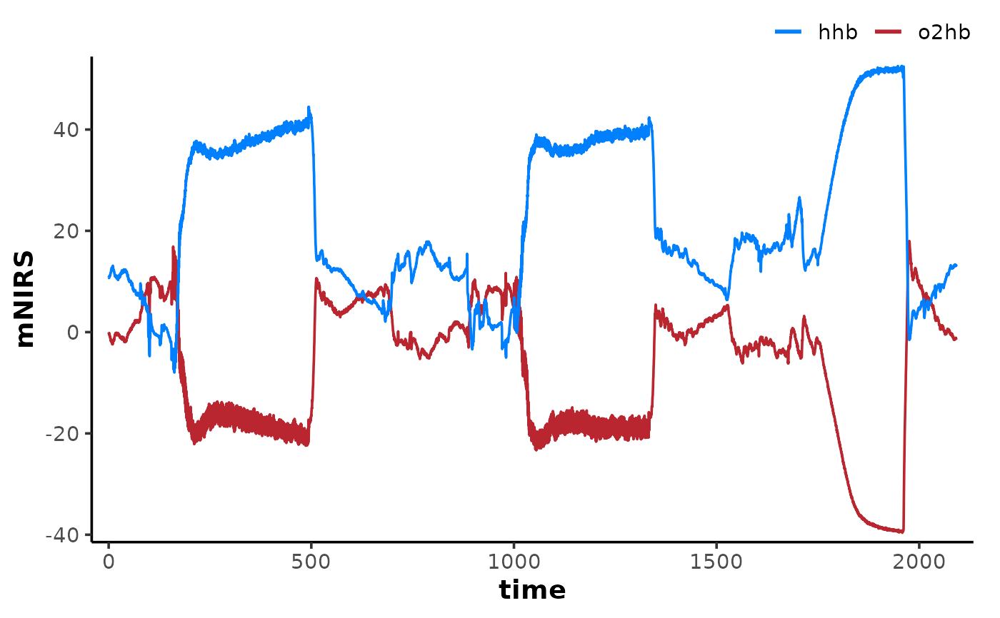
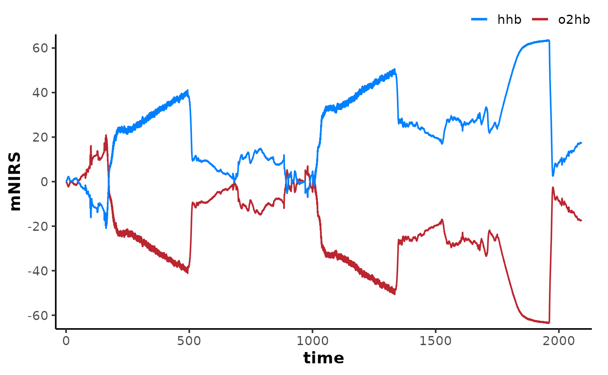

Normalises mNIRS channels for the effects of blood volume changes, following the sample-wise iterative method of Beever & Tripp et al, 2020.
Usage
correct_blood_volume(
data,
oxy_channel = NULL,
deoxy_channel = NULL,
total_channel = NULL,
verbose = TRUE
)Arguments
- data
A data frame of class "mnirs" containing time series data and metadata, a list of data frames, or a grouped data frame (see Details).
- oxy_channel
A character vector naming the
oxy[haem](oxygenated haemoglobin and myoglobin; O2Hb) column(s) indata. Must match exactly.- deoxy_channel
A character vector naming the
deoxy[haem](deoxygenated haemoglobin and myoglobin; HHb) column(s) indata. Must match exactly.- total_channel
A character vector naming the
total[haem](total haemoglobin and myoglobin; THb; proxy for blood volume) column(s) indata. Must match exactly.- verbose
Logical.
TRUE(default) will display, andFALSEwill silence warnings and information messages helpful for troubleshooting. Global default can be set viaoptions(mnirs.verbose = FALSE).
Value
A tibble of class "mnirs" with blood
volume-corrected channels written back to the specified columns, and with
metadata available with attributes(). For list or grouped data frame
input, returns a named list of "mnirs" tibbles, one per interval.
Details
Specify NIRS component channels
At least two of oxy_channel, deoxy_channel, and total_channel must
be specified to calculate the blood volume correction factor. Best practice
is to specify all existing channels in data. Missing channels are derived
from the specified pair before the correction is applied.
total=oxy + deoxyoxy=total - deoxydeoxy=total - oxy
Multiple channel pairs can be corrected in one call by passing equal-length
vectors, with each element number forming a pair (e.g.
oxy_channel = c(o2hb_1, o2hb_2), deoxy_channel = c(hhb_1, hhb_2)).
NOTE: the returned data frame will ONLY include corrected values for
the specified channels. Non-specified channels will remain uncorrected and
will therefore no longer be comparable to corrected channels. Best practice
is to specify all existing channels in data.
Compute blood volume correction
If any NIRS channels have negative values, all specified channels will be
ensemble-shifted by a common offset so that all channels contain only
positive values. Relative scaling across channels is preserved. This is
modified from the method in Beever & Tripp et al, 2020 to properly
calculate total[haem] and the blood volume correction factor beta when
there are negative NIRS values.
The correction factor beta is effectively the single-channel fractional
(%) oxygen saturation used to normalise oxy[haem] and deoxy[haem]
relative to an adjusted invariant total[haem]. This is computed as the
cumulative sum of adjusted incremental differences:
$$\Delta\text{O2Hb}_c = \Delta\text{O2Hb} - \beta \cdot \Delta\text{THb}$$ $$\Delta\text{HHb}_c = \Delta\text{HHb} - (1 - \beta) \cdot \Delta\text{THb}$$
After correction, total[haem] is zero (blood volume changes are
normalised).
Data input formats
mnirs processing functions accept data in multiple formats:
A single "mnirs" data frame is processed and returned directly.
A list of "mnirs" data frames: each interval is processed separately and returned as a named list.
A grouped "mnirs" data frame, e.g. with
dplyr::group_by(): the data frame is split by grouping levels and each group is processed as a separate interval, returned as a named list.
References
Beever AT, Tripp TR, Zhang J, MacInnis MJ (2020) Nirs-Derived Skeletal Muscle Oxidative Capacity Is Correlated with Aerobic Fitness and Independent of Sex. J Appl Physiol (1985). doi:10.1152/japplphysiol.00017.2020
Ryan TE, Erickson ML, Brizendine JT, et al. (2012) Noninvasive Evaluation of Skeletal Muscle Mitochondrial Capacity with near-Infrared Spectroscopy: Correcting for Blood Volume Changes. J Appl Physiol (1985). doi:10.1152/japplphysiol.00319.2012
Examples
data <- read_mnirs(
file_path = example_mnirs("artinis"),
nirs_channels = c(o2hb = 2, hhb = 3),
time_channel = c(sample = 1),
verbose = FALSE,
)
plot(data)

result <- correct_blood_volume(
data,
oxy_channel = "o2hb",
deoxy_channel = "hhb", ## thb will be derived from o2hb + hhb
)
#> ℹ o2hb and hhb channels have been corrected for changes in blood volume.
plot(result)
